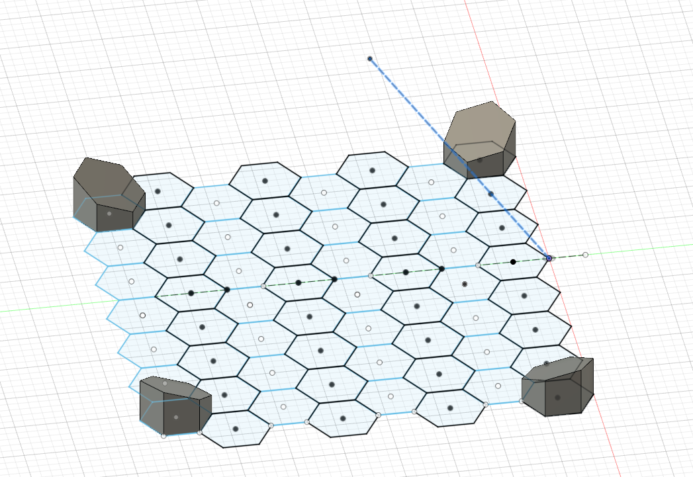
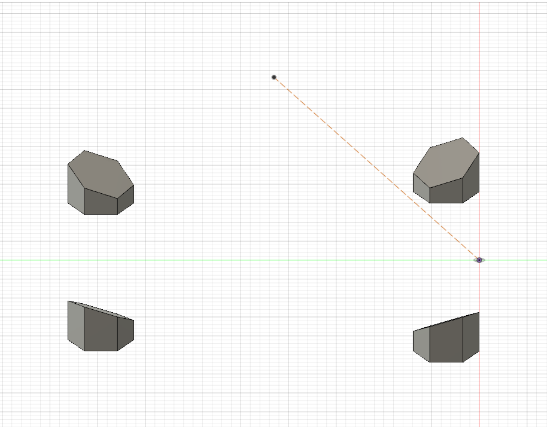
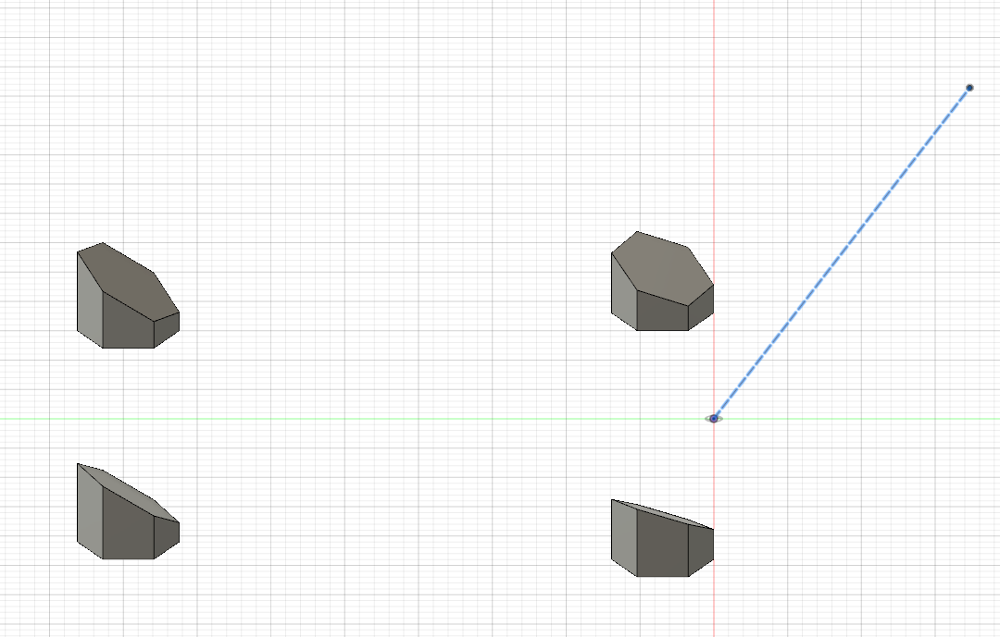
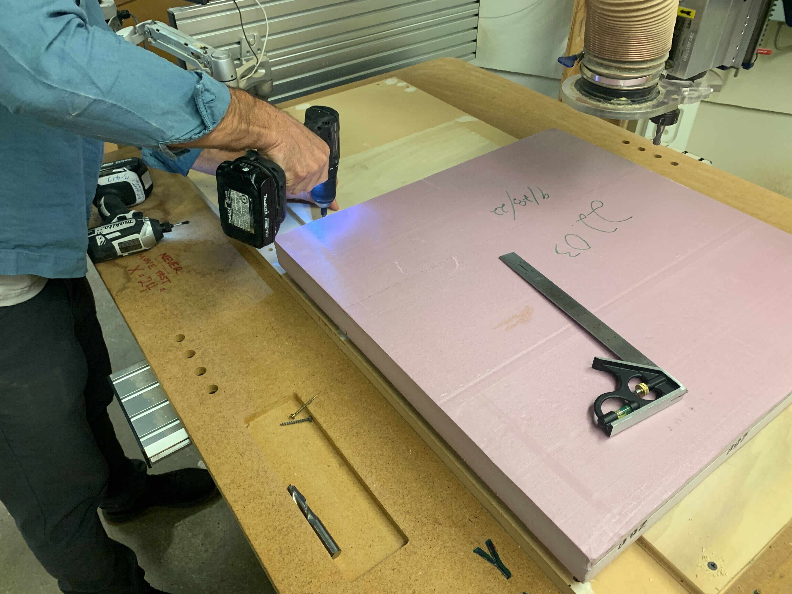
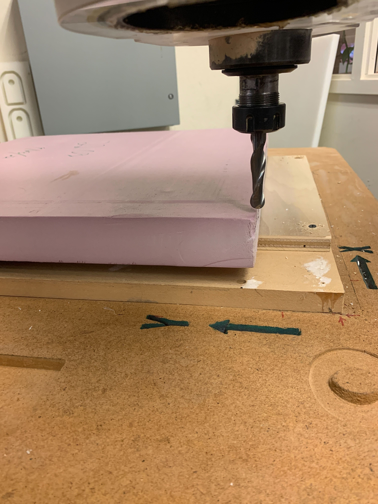
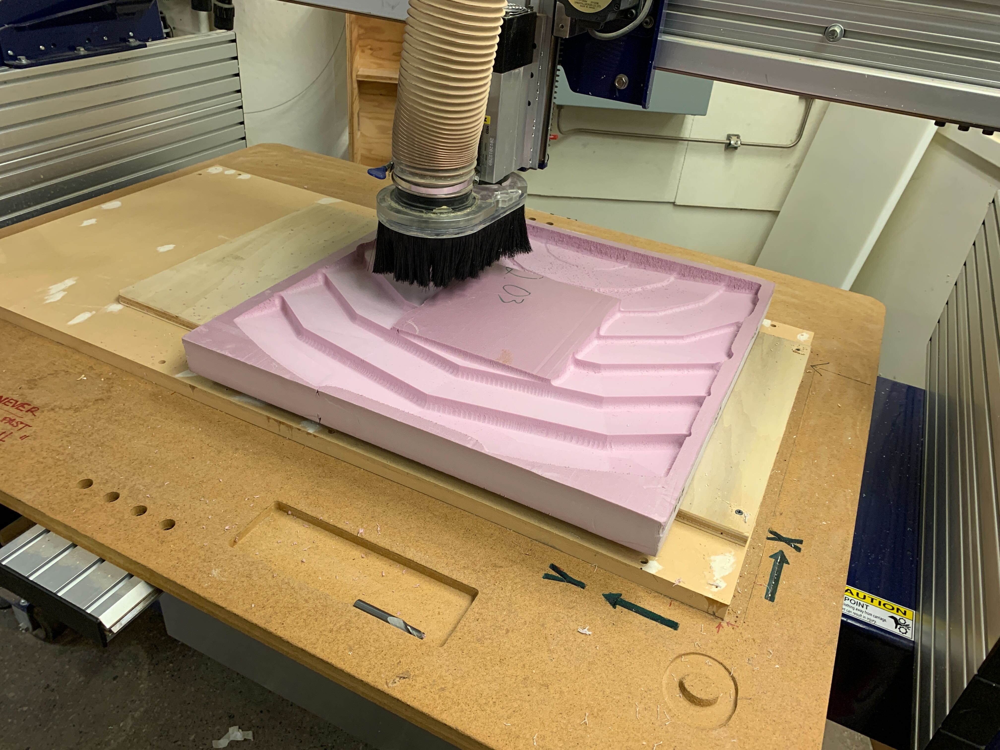

### Week 5: Reflector CAD and Machining
This week started with our team continuing to learn more about creating our reflector support structure in Fusion 360. Assuming that we want to reflect the sunlight at a point directly above the center of the reflector array, the ordinary circular design could be used as the model.
However, we may want to reflect the sunlight to somewhere that is not located above the center of the array, or perhaps somewhere even totally away from the array. In order to do this, we learned how to create an offset reflector array.
The basic steps to creating these offset arrays are as follows:
1. Create an initial line in space, the end of which contains the point (this point will be where we reflect sunlight)
2. Create a starter surface, array this surface to create a grid-like pattern
3. Create a plane above this surface and place center points of each grid “square” onto the surface (the height of the plane will be how tall each panel on the reflector array is)
4. Create a plane between the point in space, and the center points of our “squares” and the center point on the plane above the square from step 3
5. On this plane, draw one line vertically, another one lined up with the point in space, and a final line that bisects those two
6. Create a plane along a path by choosing that line
7. Extrude the grid square to this plane, repeat for other squares.
The end result of this process is a model that will actually change the angles/directions of all the faces in the array to reflect light to wherever the point in space is. The reflector array I created used a hexagon as the base shape.

Moving the point from a position in the center of the array:

To a position that is further away from the array or outside of it changes the angle of the planes as such:

The main issue with this method is that it is a rather tedious process. These planes are not able to be duplicated using Fusion 360, so steps 4-7 must be repeated for every single “square” in your grid. This is especially time-consuming the more grid “squares” you have. Other 3D modeling software may be more efficient at creating these surfaces using this method, but this remains to be seen.
The second half of this week focused on the machining of a portion of a circular reflector array to be used for testing. The section we machined measured a total of 24" x 24".
We began the machining process by securing the foam we would be making the reflector section out of to a piece of board, and screwing that board into the CNC machine cutting area. This is done to ensure that the foam did not move around when in contact with the cutting tool, which could cause to defects or even bodily injury (if it went flying).

We then set the proper 0-points for the x, y, and z-axis of the machine, to make sure our reflector would be cut properly.

Finally, we were able to begin cutting.
<video controls>
<source src="./cncvideo1.mp4" type="video/mp4">
</video>
Cutting the material was a pretty long process, as the large machine we were using was not designed in such a way that allowed for quick precise movements. However, as time went on, the reflector began to come together.
<video controls>
<source src="./cncvideo2.mp4" type="video/mp4">
</video>
The following image is what the reflector looked like as we concluded the week. More updates/images of the finished reflector section will be found in week 6.

And here is a [link to the home page](../index.html).